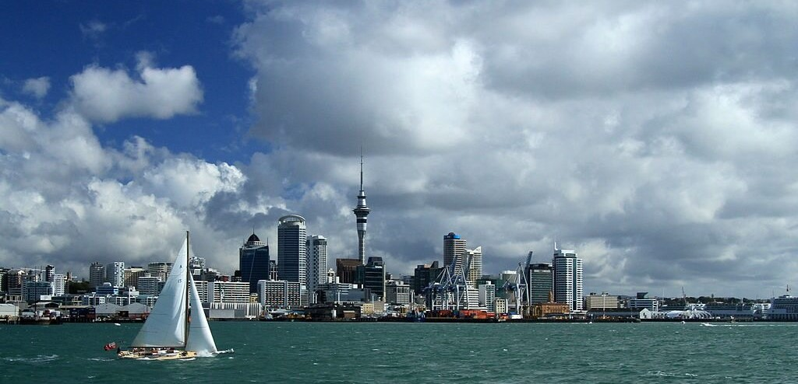

Pupuke Kāhui Ako
Ngāti Pāoa is a Māori iwi of the Hauraki region. Its traditional lands stretch from the western side of the Hauraki Plains to Auckland. They also settled on Hauraki Gulf islands such as Waiheke.
Ngāti Pāoa is one of five tribes of the Marutūāhu confederation, the others being Ngāti Maru, Ngāti Rongoū, Ngāti Tamaterā and Ngāti Whanaunga. The Marutūāhu tribes are all descended from Marutūāhu, a son of Hotunui, who is said to have arrived in New Zealand on the Tainui canoe. The Marutūāhu tribes are therefore part of the Tainui group of tribes. The Marutūāhu confederation is also part of the Hauraki collective of tribes.
Ngāti Pāoa is one of five tribes of the Marutūāhu confederation, the others being Ngāti Maru, Ngāti Rongoū, Ngāti Tamaterā and Ngāti Whanaunga. The Marutūāhu tribes are all descended from Marutūāhu, a son of Hotunui, who is said to have arrived in New Zealand on the Tainui canoe. The Marutūāhu tribes are therefore part of the Tainui group of tribes. The Marutūāhu confederation is also part of the Hauraki collective of tribes.
Early History
Ngāti Pāoa is descended from Pāoa. According to a Hauraki tradition his father was Rongo-tiu-moe-whara of the East Coast iwi, Ngāti Kahungunu, born at Whai-a-pāoa near Wharekahika. According to Tainui accounts his father was Hekemaru, his paternal grandparents were Pikiao from the Te Arawa tribe, and Rereiao, a high-born Waikato woman descended from Whatihua, and he was the brother of Mahuta, from whom Ngāti Mahuta is descended. On either version, Pāoa lived with his first wife Tauhākari, sons Toapoto and Toawhana, and daughter Koura at Kaitotehe, near Taupiri in the central Waikato. Pāoa moved from Kaitotehe to Hauraki, where he married Tukutuku, a granddaughter of Tamaterā, with whom he had sons, first Haora Tipa Koinaki and second Horowhenua.
Pāoa and Tukutuku's children lived in and around the Hauraki Plains. Ngāti Pāoa later spread to the western side of the Firth of Thames, from where they also frequented the Hunua Ranges. By the 1700s they also frequented the Tāmaki (Auckland) isthmus, the North Shore and the eastern and northern Coromandel Peninsula.
In about 1780 Ngāti Pāoa established settlements along the western side of the Tamaki River and at Mokoia (present-day Panmure). In 1790 and from 1793 to 1798 they engaged in many battles with tribes to the north, at least as far as the Mahurangi district. By 1805 they were tiring of war and negotiated peace settlements with many neighbouring tribes. At this time they had settlements along the Tamaki River as far as Otahuhu.

Waitematā Harbour is the main access by sea to Auckland. For this reason it is often referred to as Auckland Harbour, despite the fact that it is one of two harbours adjoining the city. The harbour forms the northern and eastern coasts of the Auckland isthmus and is crossed by the Auckland Harbour Bridge.
It is matched on the southern side of the city by the shallower waters of the Manukau Harbour. With an area of 70 square miles (180km2), it connects the city's main port and the Auckland waterfront to the Hauraki Gulf and the Pacific Ocean. It is sheltered from Pacific storms by Auckland's North Shore, Rangitoto Island, and Waiheke Island.
It is matched on the southern side of the city by the shallower waters of the Manukau Harbour. With an area of 70 square miles (180km2), it connects the city's main port and the Auckland waterfront to the Hauraki Gulf and the Pacific Ocean. It is sheltered from Pacific storms by Auckland's North Shore, Rangitoto Island, and Waiheke Island.
Etymology
The oldest Māori name of the harbour was Te Whanga-nui o Toi (The Big Bay of Toi), named after Toi, an early Māori explorer. The name Waitematā means "Te Mata Waters", which according to some traditions refers to a mauri stone (a stone of Māori religious significance) called Te Mata, which was placed on Boat Rock (in the harbour south-west of Chatswood) by Te Arawa chief Kahumatamomoe. A popular translation of Waitematā is "The Obsidian Waters", referring to obsidian rock (matā). Another popular translation, derived from this, is "The Sparkling Waters", as the harbour waters were said to glint like the volcanic glass obsidian. However, this is incorrect, as grammatically Waitematā could not mean this.

History
Prior to European settlement, the harbour was the site of many Tāmaki Māori pā and kāinga, including Kauri Point in Chatswood, Okā at Point Erin, Te Tō at Freemans Bay, Te Ngahuwera, Te Rerenga-oraiti at Point Britomart, and Ōrākei. Herald Island and Watchmen Island were both settled by the Waiohua confederation. The Waitematā Harbour was traditionally used as a fishery used by Tāmaki Māori for sharks and snapper. In the late 18th century and early 19th century, the waters were fished together by Ngāti Whātua-o-Ōrākei and Ngāti Pāoa. In traditional legend, the Waitematā Harbour is protected by a taniwha named Ureia, who takes the form of a whale.
The harbour has long been the main anchorage and port area for the Auckland region.
Well-sheltered not only by the Hauraki Gulf itself but also by Rangitoto Island, the harbour offered good protection in almost all winds, and lacked dangerous shoals or major sand bars (like on the Manukau Harbour) that would have made entry difficult. The harbour also proved a fertile area for encroaching development, with major land reclamation undertaken, especially along the Auckland waterfront, within a few decades of the city's European founding.
Taking the idea of the several Māori portage paths over the isthmus one step further, the creation of a canal that would link the Waitematā and Manukau harbours was considered in the early 1900s. Legislation (the Auckland and Manukau Canal Act 1908) was passed that would allow authorities to take privately owned land where it was deemed required for a canal. However, no serious work (or land take) was undertaken. The act was repealed on 1 November 2010.
Taking the idea of the several Māori portage paths over the isthmus one step further, the creation of a canal that would link the Waitematā and Manukau harbours was considered in the early 1900s. Legislation (the Auckland and Manukau Canal Act 1908) was passed that would allow authorities to take privately owned land where it was deemed required for a canal. However, no serious work (or land take) was undertaken. The act was repealed on 1 November 2010.